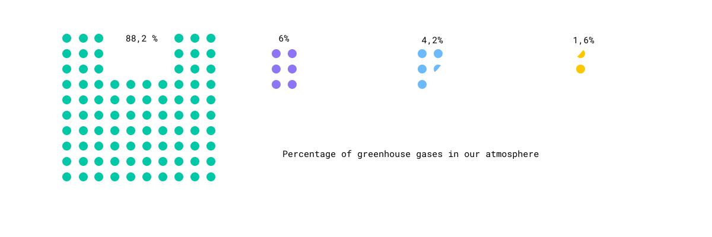
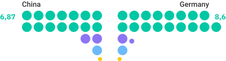

Greenhouse gases are in the Earth's atmosphere and responsible for global warming. In general, the warming of the earth is actually a natural process. However, humans produce so much additional greenhouse gases that the earth gets warmer than it would naturally. The consequences are environmental catastrophes and extinction of species.
Explore on this website interesting data about the following four (most important) human-made greenhouse gases:
CO₂
CH₄
N₂O
PFC, NF₃, SF₂

gases with CO2 equivalents
The various gases do not contribute to the greenhouse effect to the same extent and remain in the atmosphere for different periods of time. In order to make the effects of the various greenhouse gases on the climate comparable, the IPCC has defined the so-called Global Warming Potential. This index expresses the warming effect of a certain amount of a greenhouse gas (in particles per million particles = ppm) over 100 years compared to that of CO₂. So, to masure the climate impact, the gases are converted into CO₂ equivalents (CO₂eq).
One Example: Methane has 28 times more climate impact than Carbon Dioxide.
1 ppm CO₂
1 ppm CH₄
1 ppm N₂O
1 ppm PFC, NF₃, SF₂
1 CO₂eq
28 CO₂eq
298 CO₂eq
12400-23500 CO₂eq


The share of F-Gases in the atmosphere is currently around one to two percent. That seems little at first glance. However, forecasts show that this share could rise to six to eight percent in 2050 if no countermeasures are taken. Between 1990 and 2016 alone, F-Gas emissions in Germany rose by a total of 14 percent to 15.3 million tonnes of CO₂ equivalents.
Since 2015 there has been a new F-Gas regulation in force, which is a contribution to reducing fluorinated greenhouse gas emissions from the industrial sector by 70 percent by 2030 compared with 1990. In order to achieve this, the new regulation aims to introduce a gradual limitation (phase down) of the quantities of partly fluorinated hydrocarbons (HFCs) available on the market to one-fifth of today's sales volumes by the year 2030.
Also leakage tests, certification and disposal are important parts to control the amounts of F-Gases. The regulation intended to create an incentive to use alternatives instead of F-Gases.
The goal is to cut the EU’s F-Gas emission by two-thirds by 2030 compared to 2014 levels.
As already mentioned, the GWP expresses the warming effect of a certain amount of the respective greenhouse gas over a defined period of time (100 years) compared to that of CO₂. But apart from that, all gases are remaining in the atmosphere for different amounts of time, from months to millennia, and affect the climate on very different timescales.
Not only the CO₂ equivalents and the dwell time differs between the four different gases, there are also other characteristics that are unlike from one another.

Carbon Dioxide is a colourless and odourless gas. This is because it is at such a low concentration that we are accustomed to it; but if you were to increase the amount of CO₂ available in the air, you would notice a sharp acidic smell and taste. CO₂ is also colourless, but pure is heavier than air so if you had a leak from a CO₂ gas bottle, the gas would rest at floor level if it is undisturbed. It is well soluble in water and a natural component of air, as well as a natural by-product of the cellular respiration of many living creatures. The dwell time in the atmosphere is varying up to 1000 years. Interesting fact: During eruptions of volcanoes, a lot of CO₂ is released (resulting volcanic gases).

Methane is a colourless, odourless and combistible gas. It is insoluble in water and forms explosive mixtures with air. One assumes: Main component of the earthly primeval atmosphere. The average lifetime in the atmosphere is around 12.4 years, much shorter than that of CO₂. One assumes, that it was the main component of the earthly primeval atmosphere. It is mostly produced when organic matter rots in the absence of air in swamps or in sediment at the bottom of water bodies.

Nitrous Oxide, also known as laughing gas, is odourless, colourless and tasteless, although there are descriptions that describe a slightly sweet taste. With a density of 1.97 kg/m³, Nitrous Oxide is 1.5 times heavier than air, which means that it is not distributed homogeneously in a room, but tends to "fall" to the ground. Nitrous Oxide is not combustible, but can oxidise other substances. It therefore has a fire-promoting effect. Nitrous Oxide is highly soluble in cold water; under increased pressure, laughing gas shows very good solubility in fats.

The term "F-gases" stands for fluorinated greenhouse gases and is a collective term for partly fluorinated hydrocarbons (HFC), perfluorinated hydrocarbon (PFC), sulphur hexafluoride (SF6) and nitrogen trifluoride (NF3). Since 2014 there is a EU Regulation concerning fluorinated greenhouse gases which will help to reduce emission levels by gradual phasing-down available HFC quantities and expansing regulations on leak tests, certifications, disposal and labelling.


Carbon Dioxide is largely produced by the burning of fossil fuels such as coal, oil and gas, for example for power generation, in industry, domestic heating systems and in road traffic. In addition, as a result of deforestation, CO₂ is released by the decomposition of biomass during the burning of mainly tropical forests. Lignite-fired power plants emit about 20 percent of the total German CO₂ emissions.
Methane is always produced when organic material is decomposed in the absence of oxygen; this occurs mainly in the stomachs of ruminants (cows and sheep), in wet rice cultivation and in landfills. For example, a cow produces about 150 to 250 litres of methane.
Nitrous Oxide is produced in the soil during the decomposition of mineral nitrogen fertilizers. It is the most important greenhouse gas released by agriculture worldwide. The use of land and fertilizers leads to a significant release of CO₂ and Nitrous Oxide.
F-Gases are mainly used as propellants and refrigerants, their use has been greatly reduced since 1990 as they contribute to the destruction of the ozone layer; the fluorocarbons (HFCs) used as substitutes do not damage the ozone layer - but they are also greenhouse gases.
To have a better understanding of what numbers of emmission different countries have and more important, what stories are behind the numbers, we selected a few to show the anthropogenic Greenhouse Gases in context.
in megatons CO2eq, 2016
From the first view, you would think that China emits way more emissions that Germany. But there is always more than one perspective on numbers like these. One option is to distribute the emissions to capita.


Per capita emissions
in half tons CO2eq, 2016
China has 1.382.710.000 inhabitants, whether Germany has just 82.520.000 inhabitants. That means, China has a lot more inhabitants compared to Germany, which is not reflected at all in the absolute numbers. In the second grafic you can see the concrete differences between both countries.
in 100 tons CO2eq, 2016
And from another viewpoint: China has a size of 9.596.961 km², Germany just 357.582 km². That means China has fewer inhabitants per km² than Germany. This is also important to take into account, because in contrast to the absolute numbers, Germany produces more emissions per km² area than China.